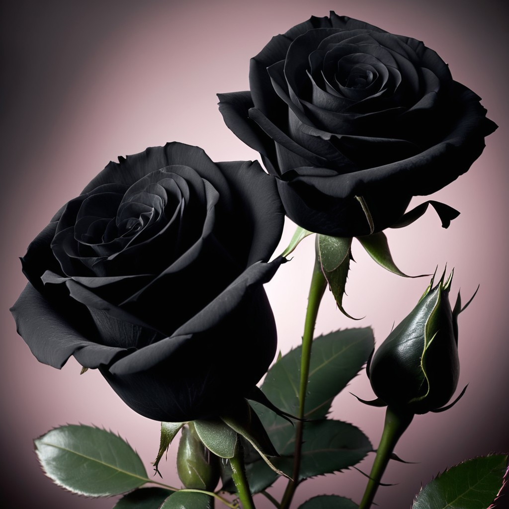
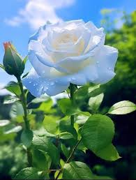
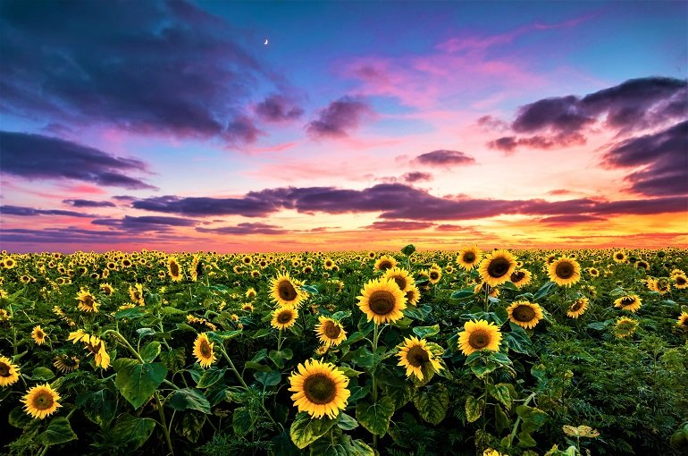
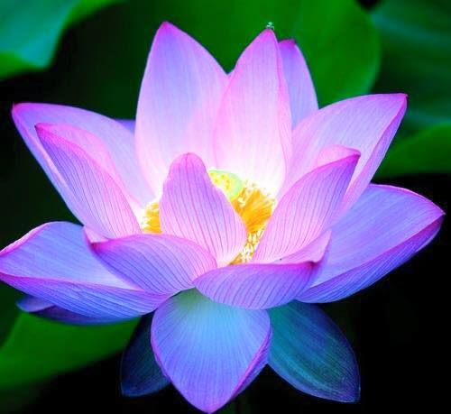
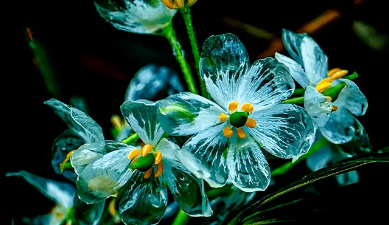

| 🌺ROSAS NEGRAS🌺 | 🌼ROSAS BLANCAS🌼 | 🌻GIRASOLES🌻 | 🪷FLOR DE LOTO🪷 | ❄FLOR DE CRISTAL❄ |
🪷SIGNIFICADO DE LAS FLORES🪷
ROSAS NEGRAS

La rosa negra no es solo una flor, es un susurro del alma. Con su color profundo, evoca misterio, elegancia y fuerza en silencio. No representa simplemente el fin, sino también el renacer tras la oscuridad. Es símbolo de despedidas que duelen, pero también de caminos nuevos que comienzan. Habla de amores intensos, a veces imposibles, que dejan huellas imborrables. Rebeldía, transformación y belleza oculta. Una rosa negra es para quienes entienden que en lo más oscuro también florece la vida.
ROSAS BLANCAS

La rosa blanca es la flor de la pureza, del alma serena y del amor sincero.
No grita, no presume… simplemente brilla con su luz suave y tranquila.
Simboliza la paz, la inocencia y los comienzos llenos de esperanza.
Es la flor de los votos eternos, de la amistad que no exige y del amor que no mancha.
Una rosa blanca es como un suspiro limpio en medio del ruido del mundo.
Delicada, serena y llena de verdad.
Porque lo más puro no necesita adornos: solo sentir y florecer.
GIRASOLES

El girasol es la flor que sigue al sol, incluso cuando el cielo se nubla.
Simboliza la luz, la alegría y la lealtad inquebrantable del corazón.
Siempre mira hacia lo alto, como si recordara que incluso en los días grises hay una razón para sonreír.
Es la flor de quienes no se rinden, de los que caminan con esperanza aunque la vida pese.
Con sus pétalos dorados, guarda el calor del verano y la fuerza del alma que nunca deja de creer.
El girasol no se dobla fácilmente.
Florece de frente, con valentía y luz propia.
FLOR DE LOTO

La flor de loto nace del barro, pero florece pura, serena y perfecta sobre el agua.
Es símbolo de transformación, de belleza que no se mancha por el pasado.
Representa el despertar del alma, la paz interior y la fuerza silenciosa de quien ha superado la oscuridad.
Cada pétalo abierto es un paso hacia la luz, un suspiro de equilibrio, un reflejo de sabiduría.
La flor de loto no olvida de dónde vino, pero elige crecer hacia el cielo.
Porque a veces, lo más hermoso florece justo donde nadie lo esperaba… en medio del caos.
FLOR DE CRISTAL

La flor de cristal no crece en jardines comunes.
Nace en el alma de quien ha amado con fuerza, caído con dolor y aún así ha decidido seguir brillando.
Es frágil, sí… pero no débil. Su transparencia revela lo que otras flores esconden: verdad, sensibilidad, pureza.
Refleja la luz como un suspiro de esperanza, pero puede romperse con una mentira.
La flor de cristal es para corazones honestos, para quienes cuidan lo que importa y no temen mostrar su esencia.
Porque hay bellezas que no se tocan… solo se sienten, con respeto y con amor.